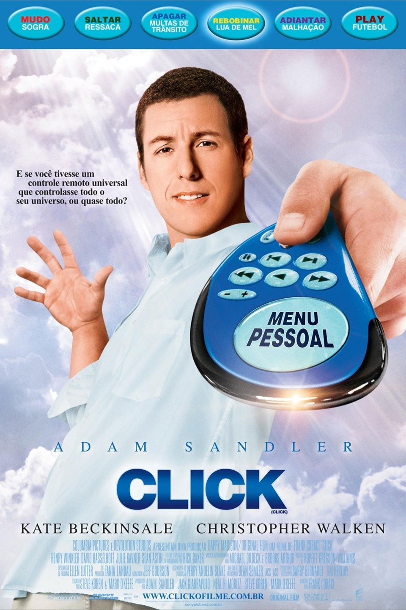

RESUMO
Michael é empatado em trabalho recebe um controle remoto mágico que permite manipular sua vida. Ele usa o dispositivo para pular momentos estressantes e acelerar o sucesso profissional. Com o tempo, percebe que perdeu momentos importantes com a família. O controle passa a agir sozinho, fazendo-o viver no automático. Arrependido, Michael entende o valor do presente e das relações. A história mistura humor, emoção e reflexão sobre prioridades.